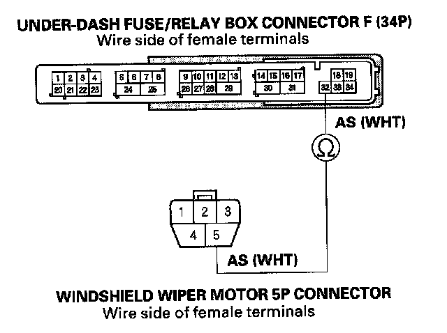
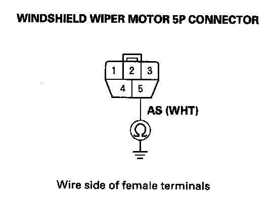
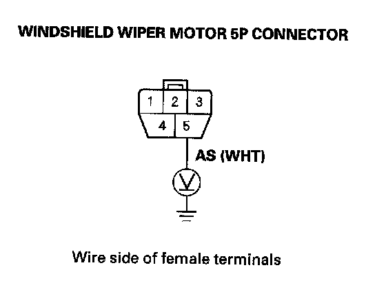
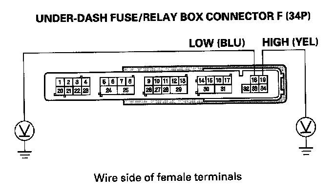
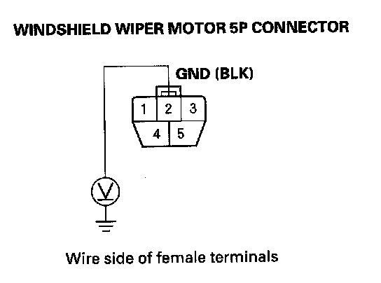

B1077
DTC B1077: Windshield Wiper (As) Signal ErrorNOTE: If you are troubleshooting multiple DTCs, be sure to follow the instructions in B-CAN System Diagnosis Test Mode A.
1. Clear the DTCs with the HDS.
2. Turn the ignition switch OFF, and then back ON (II).
3. Turn the wiper switch to LOW or HIGH for at least 15 seconds, then turn the switch OFF.
Does the windshield wiper motor run normally?
YES - Go to step 4.
NO - Go to step 12.
4. Check for DTCs with the HDS.
Is DTC B1077 indicated?
YES - Go to step 5.
NO - Intermittent failure. The windshield wiper system is OK at this time. Check for loose or poor connections.
5. Turn the ignition switch OFF.
6. Do the wiper motor test.
Does the wiper motor run normally?
YES - Go to step 7.
NO - Replace the windshield wiper motor and recheck.
7. Disconnect the under-dash fuse/relay box connector F (34P) and windshield wiper motor 5P connector.

8. Check for continuity between the No.5 terminal of the windshield wiper motor 5P connector and No. 32 terminal of the under-dash fuse/relay box connector F (34P).
Is there continuity?
YES - Go to step 9.
NO - Repair an open in the WHT wire.

9. Check for continuity between the No.5 terminal of the windshield wiper motor 5P connector and body ground.
Is there continuity?
YES - Repair a short in the WHT wire.
NO - Go to step 10.
10. Turn the ignition switch ON (II).

11. Check for voltage between the No.5 terminal of the windshield wiper motor 5P connector and body ground.
Is there voltage?
YES - Repair a short to power in the WHT wire.
NO - Faulty MICU; replace the under-dash fuse/relay box.
12. Turn the ignition switch OFF.
13. Check the No. 38 (30 A) fuse in the under-dash fuse/relay box.
Is the fuse OK?
YES - Go to step 14.
NO - Replace the fuse and recheck the system.
14. Do the wiper motor test.
Does the wiper motor run normally?
YES - Go to step 15.
NO - Replace the windshield wiper motor and recheck.
15. Reconnect the windshield wiper motor 5P connector.

16. Check the voltage between the No. 18 (LO) and No. 19 (HI) terminals of the under-dash fuse/relay box connector F (34P) and body ground with the wiper switch in the corresponding position individually.
Is there battery voltage?
YES - Go to step 17.
NO - Faulty MICU; replace the under-dash fuse/relay box.

17. Check the voltage between the NO.2 terminal of the windshield wiper motor 5P connector and body ground.
Is there less than 1 V?
YES - Repair an open in the BLU (LO) or YEL (HI) wire.
NO - Repair an open in the BLK wire or poor ground (G201).